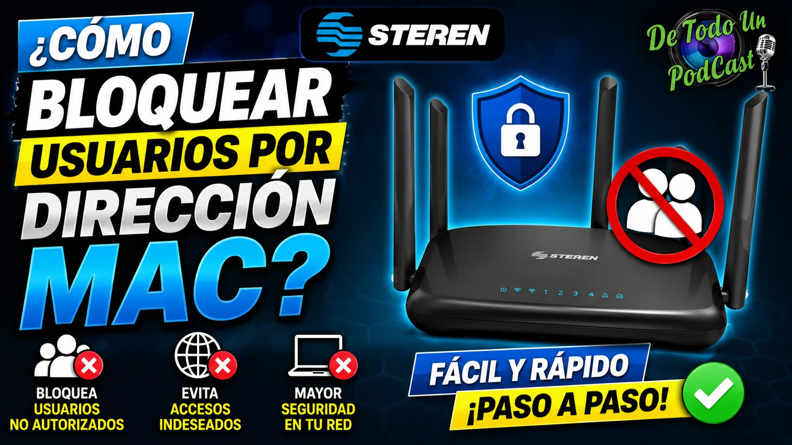

Tutorial Erick Islas Tech
¿Cómo bloquear usuarios por dirección MAC?
Guía clara para mejorar la administración de red, seguridad básica y configuración de dispositivos conectados.

¿Qué aprenderás?
- ¿Qué es DHCP?
- ¿Cómo obtener la nueva IP del COM-852?
- ¿Qué es una dirección MAC?
- ¿Cómo obtener la MAC en una PC y Android?
Guía de apoyo
En este nuevo video te enseñamos como puedes restringir el acceso a internet dentro de tu router/repetidor de la marca Steren, acompáñame a revisar los pasos y enseñarte el funcionamiento.